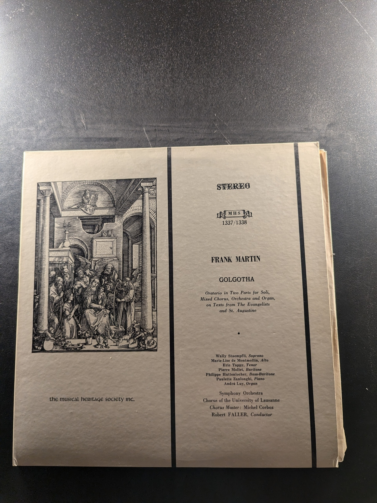
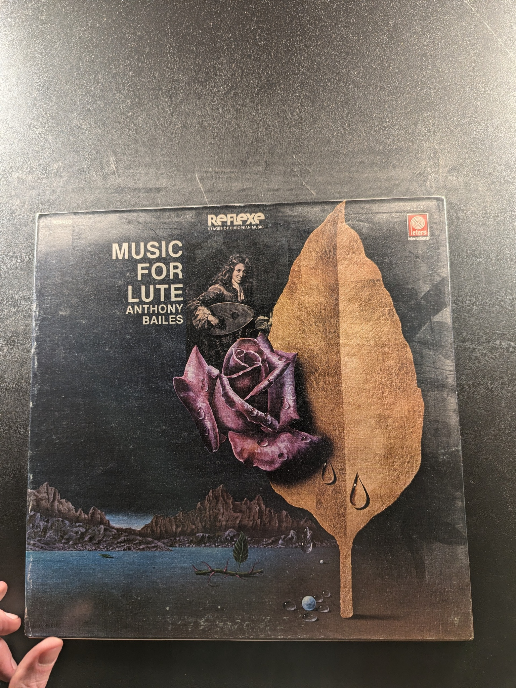

German Requiem
Johannes Brahms
Musical Heritage Society 762/763
First Booke of Songes 1597
Dowland
L'Oiseau-Lyre
Spanish Music of the Renaissance
New York Pro Musica
Decca Records DL 79409
Golgotha
Frank Martin
Musical Heritage Society Inc. MHS 1337/1338
Bach: The Six Partitas
Glenn Gould
Columbia MS 6952
Complete Symphonies Volume I
Johannes Brahms
Musical Heritage Society MHS 4115/16
Peter and the Wolf / The Young Person's Guide to the Orchestra
Antal Dorati / Sean Connery
I don't know I don't know
The Chieftains 7
The Chieftains
Lutunn Noz: Celtic Music for Guitar
Bernard Benoit
MHS MHS STEREO 3577
Concerto Grossi no. 1 & 2 - Overture
Telemann
Counterpoint / Esoteric 5612
Geistliche Chorwerke
Tomás Luis de Victoria
Archiv Produktion 2533 051
Piano Music of Alkan
Raymond Lewenthal
RCA Victor Red Seal LSC-2815
Symphony No. 1 in C
Sir Thomas Beecham, The Royal Philharmonic Orchestra
Seraphim S-60062
12 Scriabin Etudes ~ Plus Sonata No. 6
Sviatoslav Richter
Hall of Fame HOF 503
The Four Violin Concerti
Johann Sebastian Bach
Musical Heritage Society MHS 1969/70
The Complete Trio Sonatas Volume II
Henry Purcell
Musical Heritage Society 944/945

Rampal and Lagoya in Concert
Rampal and Lagoya
RCA Red Seal ARL2-2831

Piano Music
Isaac Albeniz
Musical Heritage Society MHS 1571/2
12 Sonate per Violino Op. 5
Arcangelo Corelli
Philips 6766 178
Music for Lute
Anthony Bailes
Telefunken 6.42604
The Six Sonatas for Violin and Harpsichord
Johann Sebastian Bach
The Musical Heritage Society Inc. OR 431/432
An Evening with Allan Sherman
Allan Sherman
RCA Red Seal CRS-2-2710
Music of Russian Masters
Bochum Symphony, Munich Chamber Orchestra
MHS 3752
{kind=link}
{kind=link}
{kind=link}
{kind=link}
{kind=link}
{kind=link}
{kind=link}
{kind=link}
{kind=link}
{kind=link}
{kind=link}
{kind=link}
{kind=link}
{kind=link}
{kind=link}
{kind=link}
{kind=link}
{kind=link}
{kind=link}
{kind=link}
{kind=link}
{kind=link}
{kind=link}